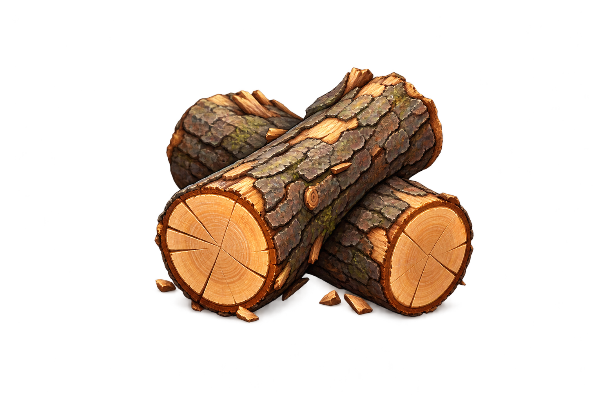
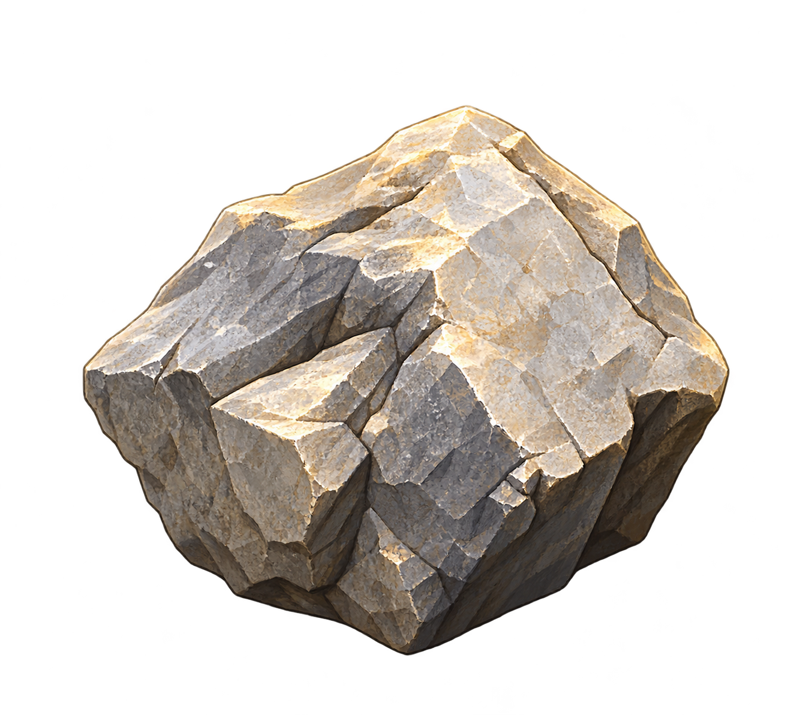

灵境堡垒
A CIVILIZATION IN THE MAKING
文明发展 · 探索 · 经营 · 战斗
从一方营地，
走向万境之上。
未知的土地正等待第一个脚印。
在这里，文明的每一步都由你亲手写下。
序章版本 / 旅程将保存在本机
EARLY CHRONICLE—01
01选择领主开启旅程
存档 01
你的故事，从此人开始
选择一位领主
每个存档拥有独立的领主。此角色为临时设定，后续可替换。
＋后续领主敬请期待
＋后续领主敬请期待
＋后续领主敬请期待
＋后续领主敬请期待
THE FIRST CHRONICLER · 01 / 05
无名的开拓者
雾海之上 · 万境待启
选择一个世界
拖动雾海，或按 A / D，让群岛在你眼前轮转。
DRAG TO TURN
WORLD / 01初始之地文明的第一片土地
已开放世界 01共 05 个世界坐标
无名的开拓者
初始之地 · 探索区域
从这里，开始拓荒。
拖动地图查看已知地貌。森林、矿洞与未知势力，都在边界之外等待探索。
区域视图拖动浏览 · 点击地点
点击 初始区域进入营地 · 拖动地图探索周边
76%
初始营地初始之地 · 原始时代
第 1 日

木材0+0 / 日
石料0+0 / 日粮食0+0 / 日居民4 / 4可征募 42 / 2初始营地 · 草原点击可达地块移动
横屏体验旋转设备，
旋转设备，
展开你的营地。
横屏可获得更宽阔的视野。你也可以继续竖屏游玩。
营地物资仓库
储量不设上限基础材料 FOUNDATION
木材建造与制作材料0
石料建造与制作材料0
粮食果树林地块产出0
营地建设建筑列表
选中单位后，点击可达地块下令移动拖动地图 · 滚轮缩放QWEASD选中单位后移动空格结束回合B建造T科技I仓库
新发现 · 木器研究
米娜 · 领主助理
领主，我们发现了一种工具，看来野兽也会惧怕我们了吧。
木制工具即将投入使用。确认后，研究成果将写入这份存档。
点击后，木制工具将解锁安全区域 · 可进入
初始营地
一片临河的空地，周围有林木、石料与尚未开启的矿洞。这里将成为你的文明起点。